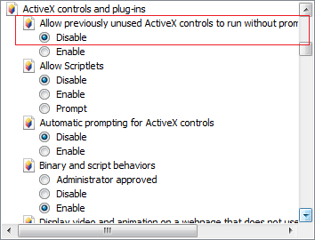

HTML 的概述
HTML 標籤介紹
Adobe Dreamware 介紹
主講人：梁智勇 Miller Liang
8月19日, 2013
概述html
1980 年，蒂姆·伯納斯-李 (Tim Berners-Lee) 為使世界各地的物理學家能夠方便的進行合作研究，建立了使用於其系統的 HTML。
Tim Berners-Lee 設計的 HTML 以純文字格式為基礎，可以使用任何文字編輯器處理，最初僅有少量標記（TAG）而易於掌握運用。
概述html
A.
HTML 的全名是 HyperText Markup Language，是編寫網頁的基本語言，而它並不是一個程式， 只是一些插在普通文件內的碼( code )，這些碼可以控制我們的瀏覽器要怎樣把文件顯示出來，就是你現在所看到的頁面就是用HTML來控制的，它可控制字體的大小，也可以插入連結或圖像。
概述html
B.
一個 HTML 檔稱為 HTML document，存檔的副檔名為 htm 或 html，編寫的方式有很多種， 最原始的方法是用 windows 內的記事本或各種文書編輯軟體，而現在大部分使用者編寫 HTML 碼都採用 Adobe Dreamweaver 編輯軟體，編寫完成後記得儲存成 *.htm 或 *.html 即可。
概述html
C.
一份標準的 HTML 文件是由元素所組成的，元素是由標籤 (Tag) 以及文件內容所組成。文件內容可以是文字、圖形、甚至是影像、聲音等等。
而標籤又是啥東東呢？？ 一個開始標籤 (< >) 是由一個小於符號 (<)和一個大於符號(>) 所構成的一個起始標籤中加一道斜線 "/" 就構成了結束標籤 (< / >) 而一對標籤是由一個起始標籤和一個結束標籤所構成的。
TAG 標籤範例
<html> <head> <meta http-equiv="Content-Type" content="text/html; charset=utf-8" /> <title>網頁標題文字</title> </head> <body> <p>在瀏覽器顯示的內容</p> <h1>在瀏覽器顯示的內容</h1> <marquee>在瀏覽器顯示的內容</marquee> <em>在瀏覽器顯示的內容</em> <strong>在瀏覽器顯示的內容</strong> <q>在瀏覽器顯示的內容</q> </body> </html>
網頁瀏覽器的發展史
多媒體及外掛 Plugin


IE Activex
HTML 常用基本標籤介紹
w3 School 在線教程